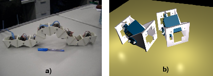

Next: 2 Locomotion algorithm for Up: Evaluation of a locomotion Previous: Evaluation of a locomotion


Next: 2 Locomotion
algorithm for Up: Evaluation
of a locomotion Previous: Evaluation
of a locomotion
Modular self-reconfigurable robots offer the promise of more versatility, robustness and low cost[1]. They are composed of modules, capable of attach and detach one to each other, changing the shape of the robot. In this context, the word ``reconfigurable'' means the ability of the robot to change its form, not a hardware reconfigurable system. In the last years, the number of robot following this approach has growth substantially[2].
One of the most advanced systems is Polybot[1][3], designed at Palo Alto Research Center (PARC). This robot has the capability to achieve different reconfigurations, such as moving as a wheel, using a rolling gait, then transforming itself into a snake and finally becoming a spider. Currently, the third generation of modules (G3) is being developed[4]. Each module has its own embedded PowerPC 555 processor with a traditional processor architecture.
An additional step on versatility is the use of Field Programming Gate Array (FPGA) technology instead of a conventional microprocessor chip. It gives the designer the possibility of implementing new architectures, faster control algorithms, or dynamically modify the hardware to adapt it to a new situation. In summary, modular reconfigurable robot controlled by a FPGA are not just able to change their shapes, but also their hardware and therefore, complete versatility can be achieved.
|
 |
Figure 1: a) ``Cube revolutions'' worm-like robot, composed of eight similar linked modules, connected in phase. b) A CAD rendering of two unconnected Y1 modules.
As previous work, an implementation of a FPGA-based worm-like robot locomotion was successfully carried out[5]. The Xilinx MicroBlaze[6] soft-processor was used for the algorithm execution and custom cores were added for servo positioning.
In this paper the locomotion algorithm for an eight modules worm-like robot (figure 1a) is evaluated in different FPGA embedded processors: MicroBlaze, PowerPC[7] and LEON2[8]. The time this algorithm takes to complete the movement generation is calculated as a function of the number of nodes of the robot, giving information about the scalability. This experimental results will be used in future work to select the architectures that fit best a particular application.


Next: 2 Locomotion
algorithm for Up: Evaluation
of a locomotion Previous: Evaluation
of a locomotion